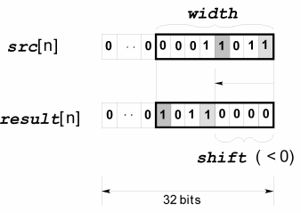
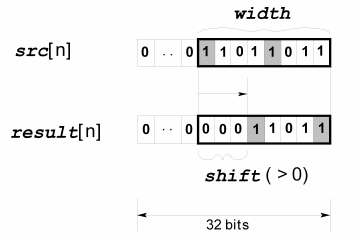

DSP_SHIFT
This API shifts a bit pattern by the specified number of bits.
DSP_SHIFT shifts the specified bits (width) of the specified elements (size) by the specified number of positions (shift).
size specifies which elements of the src to process. For example, if size = 5, then elements 0 to 4 are processed.
width specifies which of the rightmost bits are valid to be shifted. Bits to the left of the width bits are not affected. For example, if width=4, then bit 0 to bit 3 are valid.
shift specifies how many positions to shift the width bits. shift zeros are shifted into the bits.
The following figure shows the width and shift parameters:
- shift < 0, shifts to the left.

- shift > 0, shifts to the right

If shift =width, then all width bits are filled with 0.
This API is defined in the header file /opt/hp93000/soc/prod_com/include/MAPI/libdsp.h.
Syntax
DSP_SHIFT(ARRAY_I& src, ARRAY_I& result,
INT width, INT shift);
DSP_SHIFT(INT *src, INT *result, INT size,
INT width, INT shift);I/O |
Parameter |
Description / Range |
|---|---|---|
I |
src |
Source array |
O |
result |
Result array |
I |
size |
Number of elements to be processed 1 ≤ size ≤ 2097152 |
I |
width |
Number of valid bits in each element of source array LSB is defined as lsb1 = 0 and MSB as lsb1 = 31 1 ≤ width ≤ 32 |
I |
shift |
Number of positions to shift the width bits. -width ≤ shift ≤ +width |
Example
It is assumed that the source array has the following elements:
source[0] = 0...000101011
source[1] = 0...011000111
source[2] = 0...011111111
DSP_SHIFT(source, result, 3, 8, -3);
DSP_SHIFT shifts the rightmost 5 bits to the left by 3 bits, and sets the rightmost 3 bits to 0 as follows:
result[0] = 0...0[01011000]
result[1] = 0...0[00111000]
result[2] = 0...0[11111000]
DSP_SHIFT(source, result, 3, 8, 2);
DSP_SHIFT shifts the leftmost 6 bits (of the specified bits) to the right by 2 bits, and sets the leftmost 2 bits (of the specified bits) to 0 as follows:
result[0] = 0...0[00001010]
result[1] = 0...0[00110001]
result[2] = 0...0[00111111]
DSP_SHIFT(source, result, 3, 8, 8);
DSP_SHIFT sets all of the specified bits to 0.
result[0] = 0...0[00000000]
result[1] = 0...0[00000000]
result[2] = 0...0[00000000]